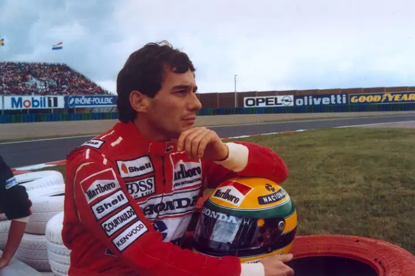

O Padrão de Excelência das Pistas: Lendas que Desafiaram o Impossível
O automobilismo não é apenas uma vitrine tecnológica; é a arte de empurrar os limites da física e da coragem
humana. Ao longo de mais de um século de história, pilotos lendários transformaram-se em mitos vivos ao
dominar máquinas ferozes sob quaisquer condições climáticas. Nomes como Juan Manuel Fangio, Jim Clark, Niki
Lauda e Alain Prost moldaram a espinha dorsal do esporte, redefinindo o que significa ser um atleta de
elite.
No entanto, acima de todas as constelações do esporte a motor, brilha a figura singular de Ayrton Senna da
Silva.
Ayrton Senna: A Metáfora da Velocidade e da Paixão Nacional
Nascido em São Paulo em 21 de março de 1960, Senna elevou a pilotagem de monopostos a uma experiência
transcendental. Dono de 3 títulos mundiais (1988, 1990 e 1991), 41 vitórias e impressionantes 65 pole
positions, o brasileiro não era apenas veloz: ele possuía uma capacidade quase mística de encontrar
aderência onde os concorrentes enxergavam apenas o caos.
O Mestre da Chuva — Habilidades sobre-humanas na pista molhada consagraram Senna desde
os primórdios. Em Mônaco (1984), guiando uma modesta Toleman debaixo de um péssimo temporal, largou em
13º e vinha caçando o líder Alain Prost perigosamente antes de a prova ser interrompida. O feito se
repetiu no GP de Portugal (1985), onde conquistou sua primeira vitória na Fórmula 1 sob um aguaceiro
histórico com a Lotus.
A Santidade das Voltas de Classificação — Para Senna, andar no limite da pole position
era uma busca espiritual. No GP de Mônaco de 1988, ele cravou uma volta 2 segundos mais rápida que seu
companheiro de equipe (e supercampeão) Alain Prost, relatando posteriormente que estava em um estado de
consciência além da compreensão normal.
O Legado Eterno — Mais do que os troféus, Senna uniu o Brasil em torno das manhãs de
domingo e transformou a segurança no esporte. Sua trágica partida em Ímola, em 1 de maio de 1994, mudou
para sempre os padrões de proteção da Fórmula 1, mas sua alma permanece viva no coração de cada fã e
piloto que entra em uma pista.
"O automobilismo está no meu sangue. Eu faço parte dele, ele faz parte de mim."

Ayrton Senna: Uma lenda que transcendeu o automobilismo. Fonte: Getty Images
Fontes e Artigos de Referência para esta Página
Top Gear – Artigo: "Ayrton Senna's ten defining moments" (Análise detalhada das atuações em Mônaco
1984/1988 e Estoril 1985).
World in Sport – Perfil: "Ayrton Senna profile: Speed, faith and F1 legacy" (Contexto sobre os
primórdios no kart, F3 britânica e a ética de trabalho).
F1 History – Estatísticas oficiais de carreira e compilação de títulos mundiais, vitórias e poles.